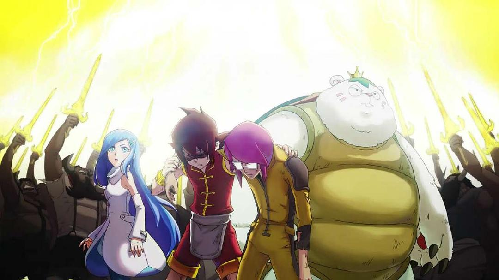
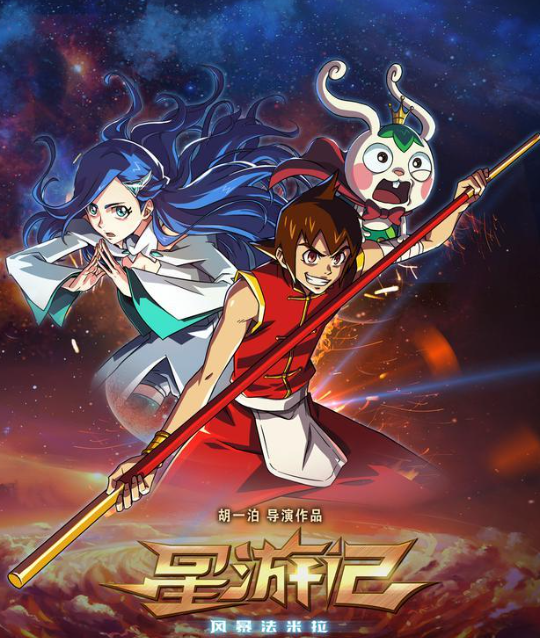
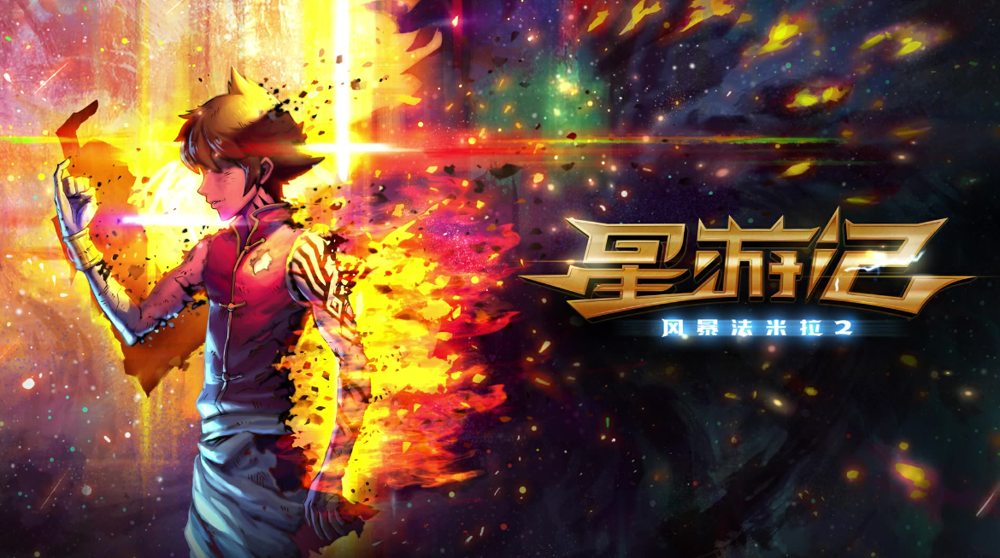
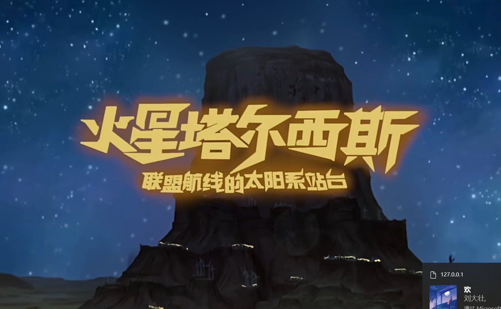

2011.10.30
“红魔鬼”麦林的儿子麦当在地球上长大,他步入父亲后尘,决心找到被视为谎言的“彩虹海”...

“红魔鬼”麦林的儿子麦当在地球上长大,他步入父亲后尘,决心找到被视为谎言的“彩虹海”...

2011年,从一个约定开始。2017年,这是我们共同的奇迹。阔别六年再飞行,这一次麦当、咕咚和笛亚在木星遭遇...

在整个宇宙都可以自由航行的未来,在木星上举办的竞技类真人秀风暴法米拉争霸赛风靡太阳系...

星游记续集...